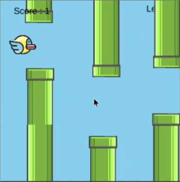

What This Program Does
This program is a game similar to Flappy Bird. Users interact by dodging tubes by pressing space to make the bird fly.
Screenshot or Visual

Project Link
Coding Concepts I Used
- Variable: Variables in my project change how a sprite is. For example, it changes the size, rotation, and even the placement of the sprite. I had variables for the tubes and the flappy bird.
- Conditional: A conditional is my project, which is a conditional that checks if the player presses space. If the player clicks space, the conditional ensures the bird flies up a little.
- Counters: There is one counter which is the score. The counter works by checking if the tube passes a certain point, and if it does, the score goes up by one.
- Function: I have three functions in my project: an end screen, a start screen, and a draw function. The end screen and start screen are just functions to make the screen show up. The draw function ensures that everything in the game runs and moves.
One Part of the Code I Understand Well
When the user presses space, my code makes the birds jump up because, in the code, I made it so that if the player presses space, the bird x increases a little.
Deeper Technical Explanation: How One Section Works
The code section: if (keyWentDown("space")) { flap.velocityY = -20; } else { flap.velocityY = 2;
I used a conditional inside a loop so that when the user presses space, the program makes the bird flap up.
One Bug or Challenge I Fixed
One problem that occurred is that players used to be able to go under the tube. I fixed this by saying if the bird's y is greater than 400, make the bird go back to 400.
One Thing I Would Improve
One feature I would add if I had more time would be to make it so that the bird can't go over the map.